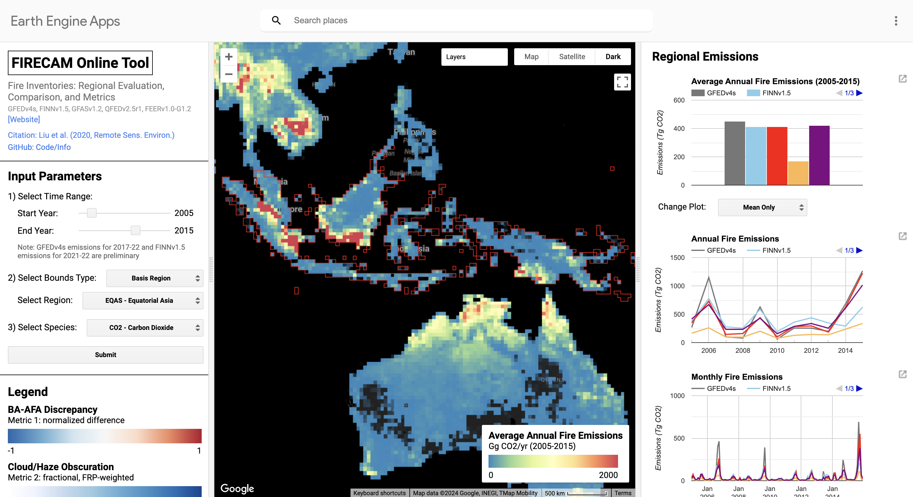
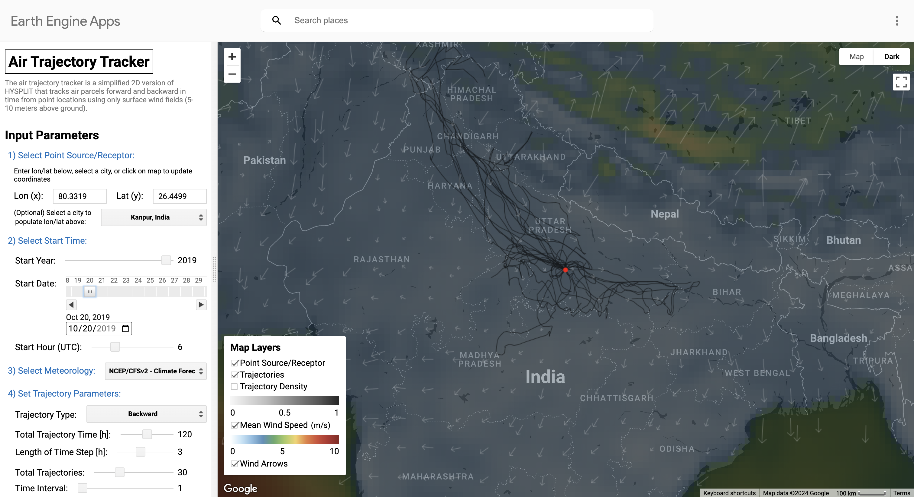
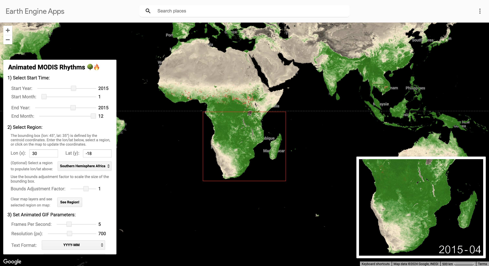

Jump to: SMOKE Policy Tool | FIRECAM Tool | GOFER Product | HMS Smoke Explorer | SMRT-Flames Tool | BA Tiling Explorer | Air Trajectory Tracker | Animated MODIS Rhythms
A complete list of my Earth Engine Apps is available here and here.
SMOKE Policy Tool // [Website] [Code]
The SMOKE Policy Tool uses land use and land cover information, GFEDv4s fire emissions, and GEOS-Chem adjoint sensitivities to model smoke PM2.5 in Singapore, Malaysia, and Indonesia from 2005-2029. The tool allows users to estimate the public health impacts from Indonesian fires and customize land management scenarios for mitigating smoke exposure and premature mortality. See our GeoHealth paper (Marlier et al., 2019) for more information.
FIRECAM Tool // [Website] [Code]
The FIRECAM Tool compares regional fire emissions estimates from five global fire emissions inventories: GFEDv4s, FINNv1.5, GFASv1.2, QFEDv2.5r1, and FEERv1.0-G1.2. The app also provides five simple metrics to help contextualize biases and differences among the five inventories. As a regional case study, I also built the SMOKE-FIRECAM Tool to show the differences in the modeled smoke PM2.5 across Equatorial Asia among the five inventories. See our RSE paper (Liu et al., 2020) for more information.
GOFER Product Visualization // [Code] [Data]
The GOES-Observed Fire Event Representation (GOFER) product contains hourly perimeters, active fire lines, and fire spread rates of 28 large wildfires in California from 2019-2021. The GOFER algorithm uses active fire detections from the GOES-East and GOES-West geostationary satellites. The visualization app also includes 12-hourly, VIIRS-derived Fire Event Data Suite (FEDS) perimeters, burn severity from the Monitoring Trends in Burn Severity (MTBS), final perimeters from CAL FIRE's Fire and Resource Assessment Program (FRAP), and 30-m land cover from the USGS National Land Cover Database (NLCD). See our ESSD paper (Liu et al., 2024a) for more information.

The HMS Smoke Explorer provides daily and annual summary visualizations of the smoke product from NOAA's Hazard Mapping System, as well as of MODIS fire and aerosol products. Every day, NOAA analysts manually draw polygons around smoke plumes, mainly using geostationary satellite imagery as reference, to make the HMS smoke product. The HMS smoke product is accompanied by a text product that describes the location and severity of smoke plumes across North America. See our IJWF paper (Liu et al., 2024b) for information about the caveats of HMS as an indicator of ground-level smoke days and comparisons with airport observations, EPA surface monitor measurements, and model estimates from the operational HRRR-Smoke model.
SMRT-Flames Tool // [Code] [Demo]
The SMRT-Flames Tool quantifies the "smoke risk" of historical and potential wildland fire emissions in the western United States on population-weighted exposure. The smoke risk index is based on a flexible framework that includes fire history and activity, emissions factors, atmospheric transport, and land cover. SMRT-Flames allows land managers to prioritize prescribed burns and fuel treatments to minimize the long-term population smoke burden. See our preprint (Chung et al., 2025) for more information about our case study on Northern California.
The Burned Area (BA) Tiling Explorer allows users to visualize data artifacts induced by tile-based algorithms used to produce NASA's MCD64A1 and ESA's FireCCI51 burned area products. See our IOP SciNotes paper (Liu and Crowley, 2021) for more information.
The Air Trajectory Tracker uses wind data from meterological datasets in Earth Engine to calculate 2D forward or backward tracjectories from point locations / receptors. This app is not meant to be used in lieu of HYSPLIT. My motivation for this app was to emulate HYSPLIT using surface winds and visualize wind patterns in Earth Engine. Future updates include on-the-fly computation of monthly surface footprints using an ensemble of trajectories with Gaussian-distributed u- and v-wind components.
The Animated MODIS Rhythms app allows end-users to generate animated GIFs of monthly MODIS-derived NDVI, a proxy for vegetative growth, and burned area with timestamp annotations. Earth Engine currently does not have the capability to add text annotations on animations. As a workaround, I generated and uploaded vector shapefiles of some digits, letters, and symbols. Each vector can be easily scaled and transformed in geographic projection to create timestamps on raster images.
